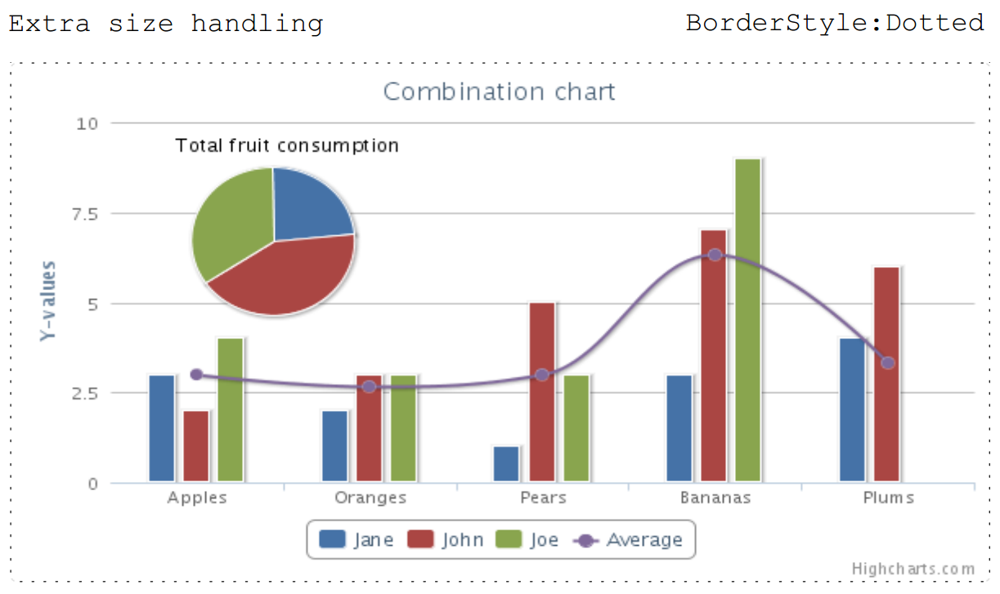

Configuring Image
Brief
The article describes how to add and configure an Image.
Details
To add an Image to a Section,
you must call the AddImage method of the ImageBuilder class.
Using a configurer of AddImage, you can directly set public image properties
or set image properties using extension methods of Image implemented in ImageBuilder.
Adding inline image inside of the paragraph is described in Adding content to the Paragraph article.
See also:
Examples
Adding Image [hide]
// Add image:
s.AddImage(imageUrl).SetWidth(100).SetScale(ScalingMode.Normal).SetBorderStyle(Stroke.Dotted);
// AutoSize (use image's original size rather than size set by client):
s.AddImage(imageUrl).SetScale(ScalingMode.AutoSize);
// Normal (use size set by client):
s.AddImage(imageUrl).SetScale(ScalingMode.Normal);
// Stretch to the available space:
s.AddImage(imageUrl).SetHeight(180).SetScale(ScalingMode.Stretch);
// Extra size image handling:
s.AddImage(imageUrl).SetWidth(1000).SetMargins(10, 10, 0, 0).SetScale(ScalingMode.Stretch);
// Extra size + BorderStyle Dotted:
s.AddImage(imageUrl).SetWidth(1000).SetMargins(10, 10, 0, 0).SetScale(ScalingMode.Stretch).SetBorderStyle(Stroke.Dotted).SetBorderColor(Color.Black);
The last example will generate the following:

You can achieve the same result with the following actions: [show]